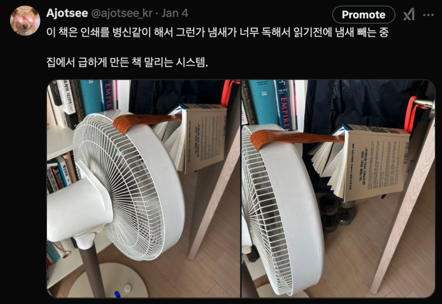
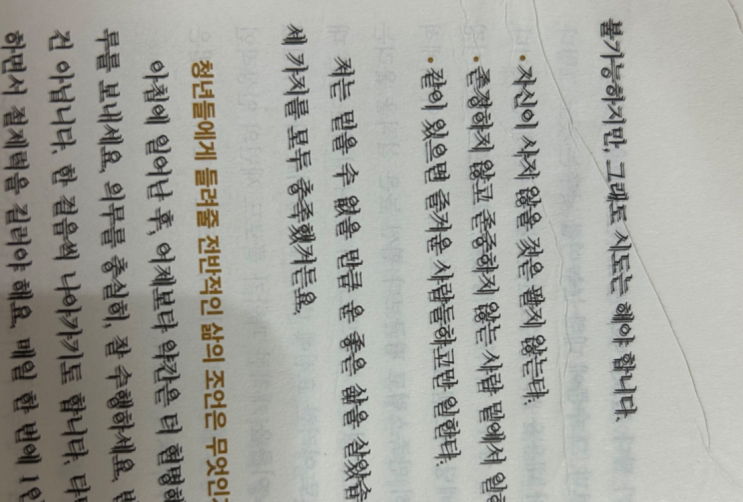
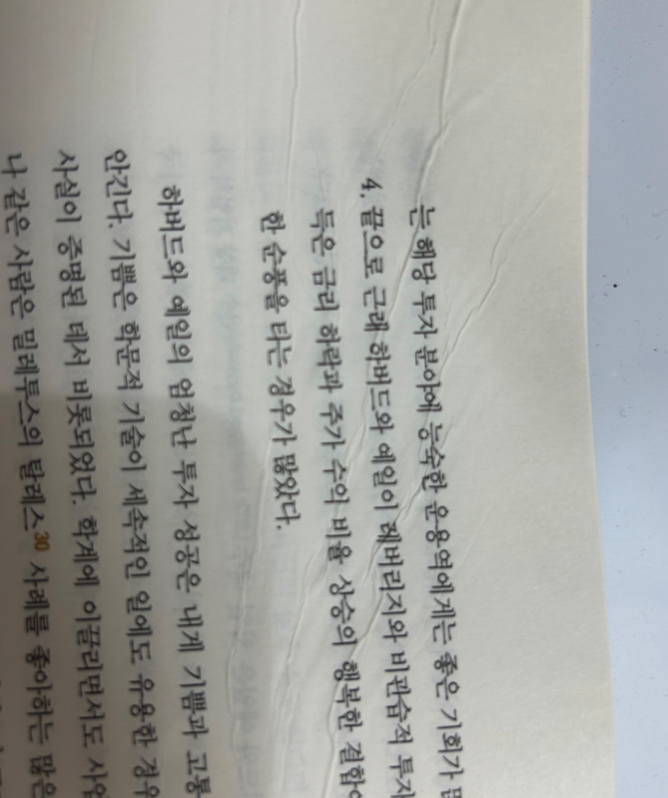
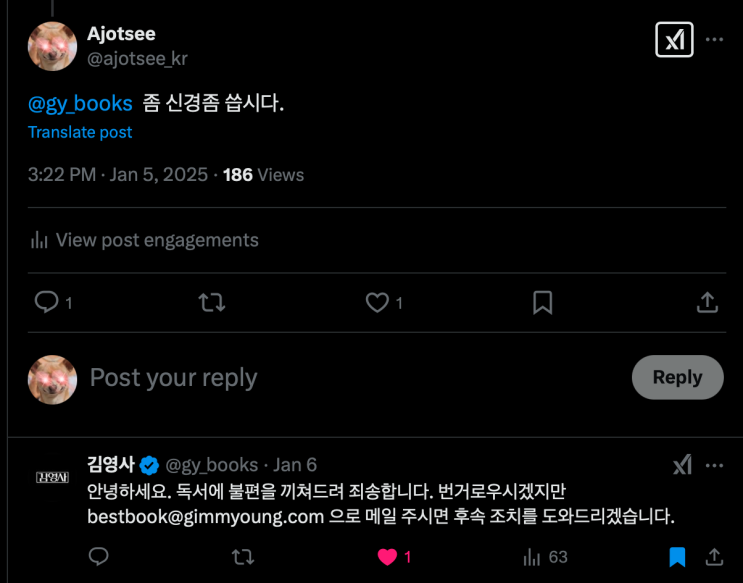

중국에서 설을 보내는 동안 한 권의 책을 들고 갔으니, 바로 이 책 가난한 찰리의 연감 입니다. 워낙 유명한 책이어서 수년
전 부터 읽어야지 읽어야지 하다가 얼마전 한국어 판이 나왔다는 소식에 잽싸게 구입하곤, 책에서 나는 냄새 때문에 -_-
(아마 잉크 문제일 듯) 냄새를 뺀 후 읽었습니다. ㅋㅋㅋ

책 냄새를 빼기 위한 몸부림
심지어 책은 인쇄 상태도 병신 같았지만...

카메라가 흔들린게 아니다...
여기에 추가로 제조를 어떻게 했는지 책에 주름도 가있었지만 ㄷㄷㄷㄷ
한지에 인쇄했냐?

이것이 출판계의 새로운 트렌드, 한지 인쇄
그래도 책 내용은 매우 좋았읍니다. ㅋㅋㅋ
빡쳐서 김영사에 환불 할려다가, 책 내용이 좋아서 참기로 함. 이런 좋은 책 내주셨는데 엣헴 이정도는 용서해드려야지.

공식 계정에서 진짜 답이 올 줄은 ㄷㄷ 김영사 열일 하네. 화이팅!
책을 읽어본 느낌은 뭐랄까.
유우머를 통해 즐거운 삶의 지혜를 전달하자는 아조씨의 개소리는 이제 그만 써도 되겠다 라는 생각이었습니다.
생태계 교
란종 등장
지난번 고동진 선생님의 '일이란 무엇인가' 를 읽고 나서 '아이구 내 최강 사노비는 이제 어디 비비지도 못하것네 ㅠㅠ' 라
는 생각이 들었는데, 이번 가난한 찰리의 연감을 읽고나서 든 생각이 '아이구 아조씨의 개소리는 잘 해봐야 찰리의 연감 짭
이네ㅠㅠ' 라는 생각이었습니다.
책은 그간 찰리 영감님이 하셨던 강연들로 구성되어 있는데, 이 분의 개드립과 쌕드립(응?)이 정말 찰집니다.
할베요, 요즘 이러면 잡혀갑니다
물론 이게 좀 영어권 개드립이라 그런가 한국어로 번역하면 좀 이상한 것들이 있긴 한데 (아마 내가 못 알아채고 지나간 드
립들도 많을 것) 강의 전체에 유우머와 풍자 그리고 톡 쏘는 비꼬기가 아주 기가막힙니다. 읽다가 혼자 미친 사람처럼 킥킥
댄 적이 한 두 번이 아님 ㅋㅋㅋ
찰리 영감님 현대에 태어나셨으면 레딧에서 이름좀 날리셨을 듯
예를 들면 이런거?
하지만 그런 말초적인 재미만 원한다면 그냥 아조씨의 개소리를 읽어도 되겠죠? ㅋㅋ 하지만 이 책이 아조씨의 개소리 따
위는 비교하는게 부끄러울 정도로 위대한 이유는
이러한 개드립 속에 깔려있는 엄청난 지혜
들 때문입니다.
제가 책을 읽다가 내용이 좋으면 나중에 다시 읽을려고 그 귀퉁이를 접어두는 버릇이 있는데 이 책은 정말 많이 접혔습니
다 (나중에 귀퉁이 접힌 것만 세서 귀퉁이 인덱스 만들어 볼까? ㅋㅋ)
알라딘 매입 불가 수준
아까 말씀 드렸듯이, 이 책은 강연들이 하나의 책으로 엮여 있는 것인데
제10강인 '성공하기 위해 갖추어야 할 도덕적 의
무' 는 찰리 영감님의 지혜의 정수가 하나로 모여있는 보석같은 강의
였습니다.
책 전체적으로 너무나 좋은 이야기들이 너무너무너무너무 많지만, 일단 이 강의에 한정하여 좋은 말을 몇개만 아래와 같이
끄집어 보았습니다.
제게 도움을 준 준 핵심적인 생각은 무엇일까요? 운 좋게도 저는 아주 어린 나이에 그 생각을 품었습니다. 바로
원하는 것을 얻는 가장 안전한 방법은 그걸 얻을 자격을 갖추는 것이라는 생각입니다.
가장 똑똑하지도 않고, 때로는 가장 근면하지도 않은 사람이 성공하는 경우를 계속 봅니다. 하지만 그들은 학습
하는 기계와 같습니다. 매일 밤, 아침보다 약간은 더 현명한 사람이 되어 잠자리에 듭니다. 그런 습관은 특히 앞
날이 창창한 사람들에게 유용합니다.
앨프리드 노스 화이트헤드는 '발명법을 발명' 했을 때 문명이 빠르게 진보한다고 정확하게 말한 바 있습니다.
(중략) 문명은 발명법을 발명할 때에만 진보합니다. 마찬가지로 여러분은 학습법을 학습할 때에만 진보합니다.
학문마다 대표적인 핵심 사상이 있고, 그 사상은 그 학문의 약 95퍼센트를 차지합니다. 그래서 모든 학문의 핵
심 사상을 익히면 모든 지식의 약 95퍼센트를 배우는 셈입니다. 그 지식을 표준적인 사고 루틴의 일부로 삼는
일은 별로 어렵지 않았습니다.
시험에서 A 학점을 받을 만큼 특정한 주제에만 통달하는 것으로는 충분하지 않습니다. 그런 수준으로 많은 것을
배워야 합니다. 그래서 다양한 지식을 머릿속 격자틀에 정리하고, 평생 무의식적으로 꺼내 쓸 수 있어야 합니다.
특정 이데올리기를 외치기 시작하면, 그게 머릿속에 박힙니다. 그건 때로 놀라운 속도로 자신을 망치는 일입니
다. 그러니 열광적인 이데올로기를 매우 조심해야 합니다.
한때 세계에서 가장 유명한 작곡가였던 사람이 있습니다. 하지만 대부분의 시간 동안 실로 비참하게 살았죠. 그
이유 중 하나는 줄곧 수입보다 지출이 많았기 때문입니다. 그 사람은 바로 모차르트 입니다. 모차르트가 그러할
진대 여러분은 말할 것도 없습니다.
생존 경쟁이라는 게임에서 이기려면 가장 뛰어난 적성과 가장 강한 학습 의지를 갖춘 사람들의 경험을 극대화해
야 한다고 생각합니다.
그는 (에픽테토스) 모든 불운이 아무리 심한 것이라고 해도 좋은 행동을 할 기회를 제공한다고 생각했습니다. 또
한 모든 불운은 유용한 것을 배울 기회이며, 우리가 할 일은 자기 연민에 빠지지 않고 모든 끔찍한 타격을 건설
적 방식으로 활용하는 것이라고 믿었습니다.
여러분의 삶 속에서 마땅한 신뢰에 기초해 매끄럽게 돌아가는 관계망을 극대화하세요. 그리고 여러분이 받은 혼
인 계약서가 47쪽이나 된다면 서명하지 말 것을 권합니다.
위에 뽑은 내용들은 아주 일부일 뿐이고, 책에는 더 좋은 내용들이 훨씬 많으니 직접 사서 읽어보시길 강력히 권유드립니
다. 도서관에서 빌려서 잠깐 읽고 돌려주는게 아니라, 집에 두면서 기회가 될때마다한 번씩 꺼내어 읽어보면 더 좋을 것이
라고 생각합니다.
찰리 멍거님께서는 얼마전 99세의 나이로 타계하셔서 우리 곁을 떠났습니다. 하지만 세상에 좋은 지혜를 남겨주셔서 감사
합니다.
끝.